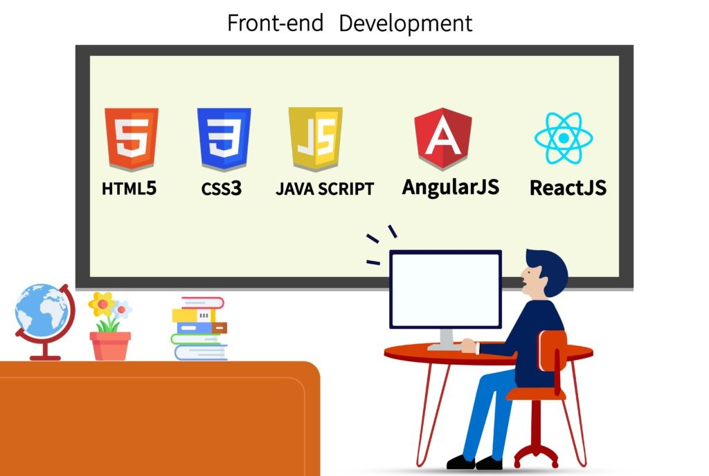
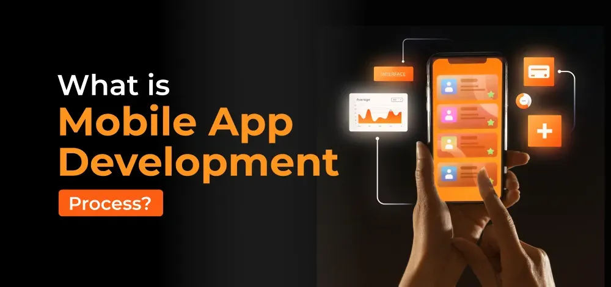

Tracks:
1. Frontend Web Development:
Frontend web development focuses entirely on the user facing side of websites and web applications. Developers in this track use fundemental langueages, like HTML, CSS, and JavaScript, often paired with modern frameworks, such as React, Angular, and Vue.js, to create the visual and interactive elements that user experiences directly. Their primary responsibility is ensuring that an application is visually appealing, highly responsive across different screen sizes, accessable to all users, and provides a seamless, intuitive user experience.

2. Backend Web Development:
Backend web development is the invesible part of any web application. it involves writing the server-side code and application logic that power the frontend. Backend developers utilizes languages, such as Python, Java, C#, or Node.js to build APIs (Application programming interfaces), manage user authentication, and route data. They also work heavily with databases (like PostgreSQL or MongoDB) to ensure information is stored securily, and retrieved efficiently, focusing heavily on application scalabilty and system architecture.

3. Mobile App Development:
Mobile App development is dedicated to creating software specifically tailored for smart phones and tablets. This track is generally split into two main native ecosystems: IOS -Apple's Operating System-, and Android -Android's operating system-. Alternatively, many devoplers now work in cross platform languages, like flatter or react native. as they allow them to write a single code that can be deployed for both systems, and work efficiently in both operating systems.

4. Data science and Machine Learning:
This track sits at the intersection of programming, advanced statistics, and predictive modeling. Data scientists, and Machine learning enginners write code mainly in Python or R to process, analyze, and extract actionable insights from massive, complex datasets. They spend Their time cleaning the data, performing exploratory data analysis, and building intelligent models using algorithmes and neural networks. This is the field that powers everything from personalized recommendation engines to interactive AI and autonomus systems.

5. Game development:
Game Development is the specialized field of creating interactive entertainement for consoles, PCs, and mobile devices. Game developers write the complex code that detects the complex mechanics, real time physics, character artificial intelligence, and graphics rendering. Instead of building from scratch, they typically work with powerful software frameworks known as game engines, such as Unity (which relies on C#), or Unreal Engines (relies on C++) to bring digital worlds to life.
6. Cyber Security
Cyber Security is the specialized track dedicated to defending computer systems, neworks, applications, and sensitive data from malicious digital attacks. Professionals in this track act as the frontline defense for organiztions. Depending on their specialization, they might work as ethical hackers (penetration testers) who actively probe systems for vurnelabilities to fix them before they can be exploited, or as security analysts who monitor network traffic in real-time to detect and respond to active threats. This track requires a deep understanding of networking protocols, operating systems(especially Linux and Windows), encryption and the ever-evolving tactics of the attacers.